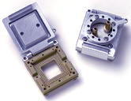
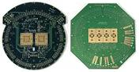
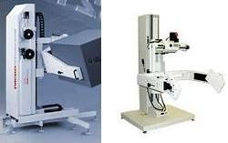
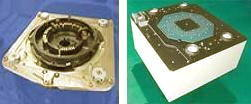

Test
Equipment Accessories
Contactors and Loadboards
High-volume electrical
testing of integrated circuits requires an
Automated Test Equipment
(ATE)
in
conjunction with a
test handler. ATE/handler
systems, however, are generic pieces of equipment that need to undergo
final configuration to make them suitable for use on devices they are to
test.
Accessories needed to configure an ATE for
production use include the right
contactors
to match the package of the devices under test (DUT's),
family boards
to match the ATE to the product group where the DUT's belong, and
loadboards,
interface boards,
or
DUT boards
to configure
the ATE to match the test requirements of a
specific device (or a specific group of devices).
Just as semiconductor
package outlines come in all forms and sizes, so do the
contactors or
contactor assemblies that cater to each of them. A contactor is a mechanism with a
set of contact elements usually in the form of metal fingers (also known as
'contact fingers') or spring-loaded
pins that come into contact with the leads or solder balls of the DUT
during electrical testing. Before production testing can begin, the test
handler must first be fitted with the test contactor assembly or
contactor block suitable
for the device to be tested.

Fig. 1.
Examples of ATE Contactors
The term 'contactor'
may also refer to
sockets employed to get convenient electrical
access to the DUT, especially if the DUT is a fine-pitch, high-pin count
complex device. Sockets are often used for hand-testing of DUT's
or in failure analysis.
Load
boards, DUT boards, and interface boards may all refer to the
same thing - a circuit board used to provide the special test circuits
needed to set up a DUT for proper ATE testing. They are boards that interface between the ATE and the DUT,
so in a way they may be considered as matchmakers between the two.
Load boards or DUT boards can also be designed for hand testing.
Hand-testing load boards have a socket for manual loading and unloading
of the DUT instead of the cable that goes to the contactor assembly of
the handler.
|
 |
|
Fig. 2.
Examples of ATE Load Boards |
Companies
with a large portfolio of products also use
family boards,
which are basically 'large' load boards that provide the 'common' test
circuitries needed by a product family, say, ADC's. The family
board goes into the ATE, while the DUT or load board goes into the
family board, acting as a daughter card to the family board. The
DUT board or load board further customizes the test circuits to the specific
requirements of the DUT. Family
boards and DUT boards contain all the necessary components to: 1) set
up the DUT for correct testing by the ATE; 2) route
the test and response signals between the DUT and the ATE; and 3)
provide additional test capabilities that the ATE may not be able to
provide.
Test Head
Manipulators and Docking Systems
Modern ATE systems have a
large test head
that needs to interface with the handler system. Test heads are
oftentimes too bulky for easy manipulation, so the test technician needs
what is known as a test head
manipulator or
positioner
for easier handling of the test head during the interfacing process.

Fig. 3.
Examples of Test Head Manipulators
Test head manipulators are basically mobile frame structures designed to
hold and position ATE test heads for
docking
with a test handler, consisting of a system of wiring conduits with
several axes of manipulation, counter-weighing mechanisms, and powered
or manual gearing. Manipulators must be stable, reliable, and quick to
set up.
Today's trend toward bigger, more capable test heads requires
state-of-the-art manipulators that are more than just strong. The test
head bundles are becoming more rigid and delicate, requiring more wiring
and cooling conduits. Operators must be given
more control
of the test head during the docking and undocking process. Thus, a
good manipulator also addresses the need for critical cable management
and smooth handling, while independently controlling linear and rotational
motions. Ease of docking and protection of delicate electrical interface
components are a must.
Aside from test head
manipulators, modern ATE systems and handlers also need a
'docking' system
in order to interface with each other. Years ago, ATE systems get
interfaced to a handler just through cables and connectors. Although
this is a cheap way to get the ATE talking to the handler, it has some
major disadvantages: 1) it can become disorderly and more difficult to
set up; 2) it results in RF losses; 3) it is notorious for intermittent
or poor contacts; and 4) it is inadequate for complex ATE/handler
systems.
Today's highly
competitive semiconductor testing industry requires not just a quick and
convenient process for interfacing an ATE to a handler, but also a way
to interface any tester to any handler. A universal, adjustable
docking system is the answer to these needs.

Fig. 4.
Examples of Docking Systems
A docking system
(see Fig. 4)
is a test equipment accessory that mechanically connects the test head
of an ATE to the handler, providing a robust, stable, and accurate
interface between the ATE and the handler. By employing a standard and
carefully selected docking system on the test floor, tester and handler
interchangeability may be achieved to boost flexibility and
productivity.
See Also:
Test Equipment;
Contactors; Load Boards;
Electrical Testing;
IC
Manufacturing
HOME
Copyright
©
2005.
EESemi.com.
All Rights Reserved.